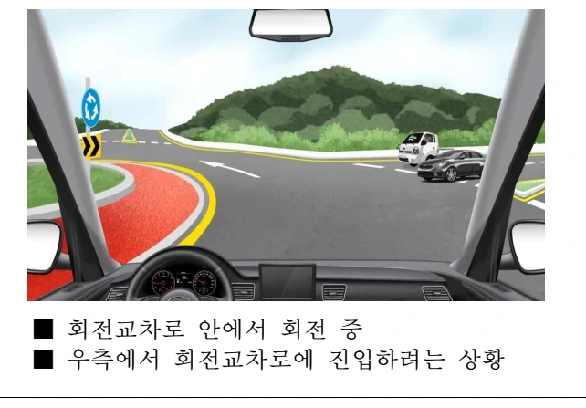

798. Hai cách điều khiển xe an toàn nhất trong trường hợp định ra khỏi hướng 12 giờ ở tình huống sau là gì?

- ①Dừng xe để nhường đường cho xe ô tô con đang định tiến vào vòng xuyến.
- ②Bật đèn xi nhan chỉ hướng bên trái và tiến vào sân đỗ xe chở hàng.
- ③Bật đèn xi nhan chỉ hướng bên phải và đi theo hướng 12 giờ.
- ④Nếu đã bỏ lỡ cơ hội đi ra khỏi vòng xuyến thì đi thêm một vòng rồi tiến ra khỏi vòng xuyến.
- ⑤Vì là tình huống định đi thẳng theo hướng 12 giờ nên không cần bật đèn xi nhan chỉ hướng.
Xem đáp án
Đáp án
③ Bật đèn xi nhan chỉ hướng bên phải và đi theo hướng 12 giờ.
④ Nếu đã bỏ lỡ cơ hội đi ra khỏi vòng xuyến thì đi thêm một vòng rồi tiến ra khỏi vòng xuyến.
Căn cứ
Điều 25-2 của Luật Giao thông đường bộ (Đường đi qua bùng binh) ① Người điều khiển tất cả các phương tiện phải đi ngược chiều kim đồng hồ tại bùng binh. ② Người điều khiển tất cả các phương tiện phải giảm tốc độ hoặc dừng lại tạm thời khi đi vào bùng binh, nếu có phương tiện khác đang đi tiếp thì phải nhường đường cho phương tiện đó. ③ Theo quy định tại khoản 1 và khoản 2, nếu có xe ô tô ra hiệu bằng tay, đèn báo hướng, đèn đi qua bùng binh thì người điều khiển xe phía sau không được cản trở đường đi của xe phía trước đã ra hiệu. Điều 38 của Luật Giao thông đường bộ (Tín hiệu giao thông đường bộ) ① Người điều khiển tất cả các phương tiện phải báo hiệu bằng tay, đèn báo rẽ hoặc đèn khi rẽ trái, rẽ phải, băng qua, quay đầu xe, di chuyển chậm, dừng hoặc lùi hoặc khi cố gắng chuyển hướng trong khi đi cùng một hướng hoặc khi đi vào hoặc ra khỏi bùng binh bằng tay, đèn báo hướng hoặc đèn cho đến khi hành động hoàn tất. Nếu xe khách, xe tải cố lao vào mà không nhường đường thì nên bỏ qua lối ra hướng 12 giờ ở lượt này, tiếp tục đi ngược chiều kim đồng hồ thêm một vòng 360 độ rồi mới ra ở hướng 12 giờ.
Phần căn cứ là bản dịch máy để tham khảo.